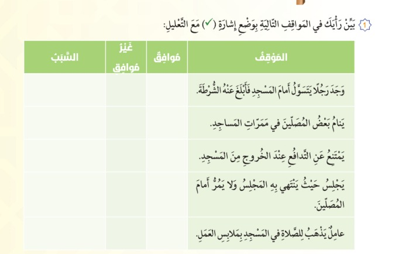
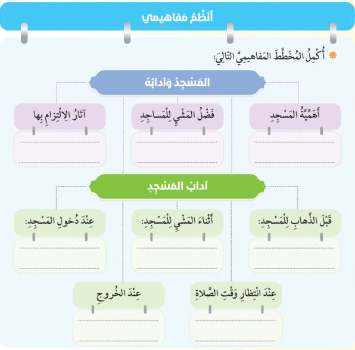
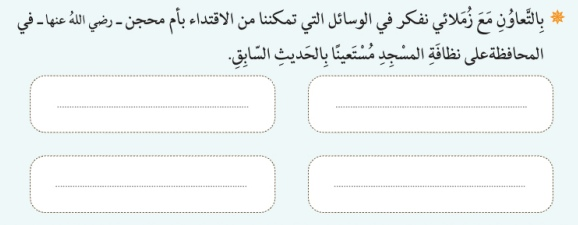

وَرَقَةُ عَمَلٍ: آداب المسجد
التَّرْبِيَةُ الْإِسْلامِيَّةُ · الصَّفُّ السّادِسُ · ﴿واسجد واقترب﴾ · الْكِتابُ م1 ص108
الْمُسْتَوى: بُرونْزِيٌّ
الِاسْمُ: ........................................الصَّفُّ: ........التّاريخُ: ..............
بُرونْزِيٌّ
أَتَذَكَّرُ وَأَفْهَمُ
فِضِّيٌّ
أَفْهَمُ وَأُبَيِّنُ
ذَهَبِيٌّ
أُحَلِّلُ وَأَسْتَنْتِجُ
ماسِيٌّ
أُقَيِّمُ وَأُطَبِّقُ
🎯 أسمّع دعاء دخول المسجد والخروج منه
تقويم شفهي: أسمّع دعاء دخول المسجد ودعاء الخروج منه لمعلمي دون نظر، من ص113 وص117؛ يرصد سلامة الألفاظ والتمييز بين موضعي الدعاءين.
📖 أَقْرَأُ النَّصَّ · الْكِتابُ م1 ص108
تحية المسجد: ركعتان عند دخول المسجد
1مَن بنى لله مسجدًا:
بنى الله له بيتًا في الجنةصار غنيًّاسافرلا أجر له
2عند دخول المسجد أقول:
«اللهم افتح لي أبواب رحمتك»«بسم الله» فقط عند الأكل«السلام عليكم» للجدارلا أقول شيئًا
3أدخل المسجد بـ:
رجلي اليمنىرجلي اليسرىأي رجلالقفز
4أَصِلُ الْكَلِمَةَ بِمَعْناها:
| الْكَلِمَةُ | | الْمَعْنى |
|---|
| تحية المسجد | | ركعتان عند دخول المسجد |
5أَضَعُ ✓ أَمامَ الْعِبارَةِ الصَّحيحَةِ وَ ✗ أَمامَ الْخَطَإِ:
| نصلّي تحية المسجد ركعتين عند الدخول. | |
| نرفع أصواتنا ونلعب في المسجد. | |
كَيْفَ أَشْعُرُ؟🟢 أَسْتَطيعُ وَحْدي🟡 أَحْتاجُ مُساعَدَةً🔴 لَمْ أَفْهَمْ بَعْدُ
وَرَقَةُ عَمَلٍ: آداب المسجد
التَّرْبِيَةُ الْإِسْلامِيَّةُ · الصَّفُّ السّادِسُ · ﴿واسجد واقترب﴾ · الْكِتابُ م1 ص108
الْمُسْتَوى: فِضِّيٌّ الِاسْمُ: ........................................الصَّفُّ: ........التّاريخُ: ..............
بُرونْزِيٌّ
أَتَذَكَّرُ وَأَفْهَمُ
فِضِّيٌّ
أَفْهَمُ وَأُبَيِّنُ
ذَهَبِيٌّ
أُحَلِّلُ وَأَسْتَنْتِجُ
ماسِيٌّ
أُقَيِّمُ وَأُطَبِّقُ
🎯 أبيّن مكانة المسجد في الإسلام
📖 أَقْرَأُ النَّصَّ · الْكِتابُ م1 ص108
تحية المسجد: ركعتان عند دخول المسجد
1لماذا نهى الإسلام عن أكل ما له رائحة كريهة قبل المسجد؟
لئلا يؤذي المصلين والملائكةلأنه حرام دائمًالأنه غالٍلا سبب
2من آداب المسجد:
عدم رفع الصوت وعدم تخطّي الرقابالأكل داخل المصلّىالركضاللعب بالهاتف
3أَشْرَحُ بِأُسْلوبي: المساجد أحب البقاع إلى الله، ومَن بنى لله مسجدًا بنى الله له بيتًا في الجنة.
4أَخْتارُ هِدايَتَيْنِ مِنَ الدَّرْسِ، وَأَكْتُبُ سُلوكًا يُطَبِّقُ كُلًّا مِنْهُما:
كَيْفَ أَشْعُرُ؟🟢 أَسْتَطيعُ وَحْدي🟡 أَحْتاجُ مُساعَدَةً🔴 لَمْ أَفْهَمْ بَعْدُ
وَرَقَةُ عَمَلٍ: آداب المسجد
التَّرْبِيَةُ الْإِسْلامِيَّةُ · الصَّفُّ السّادِسُ · ﴿واسجد واقترب﴾ · الْكِتابُ م1 ص108
الْمُسْتَوى: ذَهَبِيٌّ الِاسْمُ: ........................................الصَّفُّ: ........التّاريخُ: ..............
بُرونْزِيٌّ
أَتَذَكَّرُ وَأَفْهَمُ
فِضِّيٌّ
أَفْهَمُ وَأُبَيِّنُ
ذَهَبِيٌّ
أُحَلِّلُ وَأَسْتَنْتِجُ
ماسِيٌّ
أُقَيِّمُ وَأُطَبِّقُ
🎯 أوضّح آداب المسجد
📖 أَقْرَأُ النَّصَّ · الْكِتابُ م1 ص108
تحية المسجد: ركعتان عند دخول المسجد
1لماذا يُعدّ جامع الشيخ زايد رمزًا للتسامح؟
لأنه يستقبل الزوار من كل العالم ويعرّفهم بالإسلاملأنه كبير فقطلأنه جديدلا سبب
2أصلي عند دخول المسجد:
تحية المسجدالوترالضحىلا أصلي
3أُفَكِّرُ وَأُعَلِّلُ: ما الدعاء الذي تقوله عند الخروج من المسجد؟
4أَسْتَنْتِجُ مِنْ «في المسجد»: ما الْفِكْرَةُ الرَّئيسَةُ؟ وَما الدَّليلُ؟
كَيْفَ أَشْعُرُ؟🟢 أَسْتَطيعُ وَحْدي🟡 أَحْتاجُ مُساعَدَةً🔴 لَمْ أَفْهَمْ بَعْدُ
وَرَقَةُ عَمَلٍ: آداب المسجد
التَّرْبِيَةُ الْإِسْلامِيَّةُ · الصَّفُّ السّادِسُ · ﴿واسجد واقترب﴾ · الْكِتابُ م1 ص108
الْمُسْتَوى: ماسِيٌّ الِاسْمُ: ........................................الصَّفُّ: ........التّاريخُ: ..............
بُرونْزِيٌّ
أَتَذَكَّرُ وَأَفْهَمُ
فِضِّيٌّ
أَفْهَمُ وَأُبَيِّنُ
ذَهَبِيٌّ
أُحَلِّلُ وَأَسْتَنْتِجُ
ماسِيٌّ
أُقَيِّمُ وَأُطَبِّقُ
🎯 أستنبط ثمرات التأدّب بآداب المسجد
📖 أَقْرَأُ النَّصَّ · الْكِتابُ م1 ص108
تحية المسجد: ركعتان عند دخول المسجد
1أُقَيِّمُ وَأُناقِشُ: كيف تطبّق احترام بيت الله؟ اذكر سلوكين، وبيّن ثمرة كل منهما على الفرد أو المجتمع في ضوء ص117.
2أُحَلِّلُ الْمَوْقِفَ: ما تسلسل التصرف الصحيح؟ وما أثره على المصلين؟ استعن بص113 وص117.تدخل المسجد، فبأي رِجل تبدأ؟ وماذا تقول؟ وماذا تفعل قبل أن تجلس؟
3أُخَطِّطُ لِتَطْبيقِ الدَّرْسِ هذا الْأُسْبوعَ:
| الْيَوْمُ | ما سَأَفْعَلُهُ |
|---|
| الْأَحَدُ | |
| الثُّلاثاءُ | |
| الْخَميسُ | |
كَيْفَ أَشْعُرُ؟🟢 أَسْتَطيعُ وَحْدي🟡 أَحْتاجُ مُساعَدَةً🔴 لَمْ أَفْهَمْ بَعْدُ
قراءة من كتاب الطالب: آداب المسجد
مقتطف حرفي من ص115: الجلوس في اعتدال. ليس نص الدرس كاملًا.
التَّأَدُّبُ أَثْناءَ الْجُلوسِ في الْمَسْجِدِ:
الْجُلوسُ في اعْتِدالٍ:
الْمُسْلِمُ يَجْلِسُ مُعْتَدِلًا مُتَأَدِّبًا، لا يُكْثِرُ مِنَ التَّنَقُّلِ في الْمَسْجِدِ، وَيَلْتَزِمُ في مَجْلِسِهِ بِالْوَقارِ وَالسَّكينَةِ.
قراءة من كتاب الطالب: آداب المسجد
مقتطف حرفي من ص115: إغلاق الهواتف النقالة. ليس نص الدرس كاملًا.
إِغْلاقُ الْهَواتِفِ النَّقّالَةِ:
احْتِرامًا لِحُرْمَةِ الْمَسْجِدِ، وَمَنْعًا لِإِزْعاجِ الْمُصَلّينَ.
قراءة من كتاب الطالب: آداب المسجد
افتتاح الدرس، مقتطف حرفي من ص108 وليس نص الدرس كاملًا.
آدابُ الْمَسْجِدِ
أَتَعَلَّمُ مِنْ هذا الدَّرْسِ أَنْ:
أُبَيِّنُ مَكانَةَ الْمَسْجِدِ في الْإِسْلامِ.
أُوَضِّحُ آدابَ الْمَسْجِدِ.
أَسْتَنْبِطُ ثَمَراتِ التَّأَدُّبِ بِآدابِ الْمَسْجِدِ.
أُسَمِّعُ دُعاءَ دُخولِ الْمَسْجِدِ وَالْخُروجِ مِنْهُ.
أُبادِرُ لِأَتَعَلَّمَ:
يُلاحَظُ في كَثيرٍ مِنَ الْمَساجِدِ تَجَمُّعُ بَعْضِ الْأَطْفالِ وَلَعِبُهُمْ داخِلَ الْمَسْجِدِ مَعَ رَفْعِ أَصْواتِهِمْ بِالْحَديثِ أَثْناءَ انْتِظارِ النّاسِ لِلصَّلاةِ.
أَفَكِّرُ وَأَسْتَنْتِجُ:
ما رَأْيُكَ في هذا السُّلوكِ؟
ما الَّذي يَجِبُ عَلى الْمُسْلِمِ مُراعاتُهُ أَثْناءَ جُلوسِهِ في الْمَسْجِدِ؟
من كتاب الطالب: آداب المسجد
نشاطا الإثراء من ص120، مقتطف حرفي وليس تقويم الدرس أو نصه كاملًا.
أُثْري خِبْراتي:
بِالاشْتِراكِ مَعَ زُمَلائِكَ قُمْ بِإِعْدادِ نَشْرَةٍ تَثْقيفِيَّةٍ مُصَوَّرَةٍ حَوْلَ أَهَمِّيَّةِ الْمَساجِدِ وَآدابِها، ثُمَّ اعْرِضْها عَلى زُمَلائِكَ.
اكْتُبْ تَقْريرًا مُوجَزًا حَوْلَ تَطَوُّرِ الْمَساجِدِ بِدَوْلَةِ الْإِماراتِ الْعَرَبِيَّةِ الْمُتَّحِدَةِ، مُبَيِّنًا دَوْرَ الْقِيادَةِ الرَّشيدَةِ في ذلِكَ.
آداب المسجد: نشاط الكتاب ص119
صورة من كتاب الطالب، ص119: مواقف مع التعليل. الخانات متروكة للإجابة، وليس هذا مفتاح إجابات.

الصف السادس، الفصل الأول، طبعة 2026–2027. ملحق مصوّر من المصدر، وليس استكمالًا لنص القارئ الأساسي.
آداب المسجد: نشاط الكتاب ص119
صورة من كتاب الطالب، ص119: انتظار الصلاة. الخانات متروكة للإجابة، وليس هذا مفتاح إجابات.

الصف السادس، الفصل الأول، طبعة 2026–2027. ملحق مصوّر من المصدر، وليس استكمالًا لنص القارئ الأساسي.
آداب المسجد: نشاط الكتاب ص120
صورة من كتاب الطالب، ص120: تصنيف الأفعال. الخانات متروكة للإجابة، وليس هذا مفتاح إجابات.

الصف السادس، الفصل الأول، طبعة 2026–2027. ملحق مصوّر من المصدر، وليس استكمالًا لنص القارئ الأساسي.
آداب المسجد: نشاط الكتاب ص121
صورة من كتاب الطالب، ص121: التقويم الذاتي. الخانات متروكة للإجابة، وليس هذا مفتاح إجابات.

الصف السادس، الفصل الأول، طبعة 2026–2027. ملحق مصوّر من المصدر، وليس استكمالًا لنص القارئ الأساسي.
آداب المسجد: مقتطفان حرفيان ص117–118
تجنّب التزاحم ص117، وأضع بصمتي ص118. مقتطفان فقط، وليس نص الدرس كاملًا.
تَجَنُّبُ التَّزاحُمِ وَالتَّدافُعِ عِنْدَ الْخُروجِ مِنَ الْمَسْجِدِ.
أَضَعُ بَصْمَتي:
أُصَمِّمُ خُطَّةً عَمَلِيَّةً لِتَوْعِيَةِ أَهْلي وَجيراني وَطُلّابِ مَدْرَسَتي بِأَهَمِّيَّةِ الالْتِزامِ بِآدابِ الْمَساجِدِ.
النص من كتاب الطالب، الصف السادس، الفصل الأول، طبعة 2026–2027، ص117–118. المساحة المسطّرة مضافة للإجابة وليست من نص المصدر.
آداب المسجد: نشاط الكتاب ص114
صورة من كتاب الطالب، ص114: مقارنة التحية. الخانات متروكة للإجابة، وليس هذا مفتاح إجابات.

الصف السادس، الفصل الأول، طبعة 2026–2027. ملحق مصوّر من المصدر، وليس استكمالًا لنص القارئ الأساسي.
آداب المسجد: نشاط الكتاب ص114
صورة من كتاب الطالب، ص114: الحكم الشرعي والتعليل. الخانات متروكة للإجابة، وليس هذا مفتاح إجابات.

الصف السادس، الفصل الأول، طبعة 2026–2027. ملحق مصوّر من المصدر، وليس استكمالًا لنص القارئ الأساسي.
آداب المسجد: نشاط الكتاب ص118
صورة من كتاب الطالب، ص118: خريطة المفاهيم. الخانات متروكة للإجابة، وليس هذا مفتاح إجابات.

الصف السادس، الفصل الأول، طبعة 2026–2027. ملحق مصوّر من المصدر، وليس استكمالًا لنص القارئ الأساسي.
آداب المسجد: نشاط الكتاب ص109
مرجع كتاب الطالب، ص109: دور المسجد في بناء المجتمعات. خانات الإجابة باقية كما في المصدر.

الصف السادس، الفصل الأول، طبعة 2026–2027. ملحق مصوّر من الكتاب، وليس مفتاح إجابات أو استكمالًا للقارئ الأساسي.
آداب المسجد: نشاط الكتاب ص112
مرجع كتاب الطالب، ص112: نقد موقفين وتعليلهما. خانات الإجابة باقية كما في المصدر.

الصف السادس، الفصل الأول، طبعة 2026–2027. ملحق مصوّر من الكتاب، وليس مفتاح إجابات أو استكمالًا للقارئ الأساسي.
آداب المسجد: نشاط الكتاب ص113
مرجع كتاب الطالب، ص113: أعمال صالحة في الطريق للصلاة. خانات الإجابة باقية كما في المصدر.

يرجع النشاط إلى الحديث السابق في ص113 من الكتاب؛ الصورة لا تتضمنه، ولا تستبدل الحديث المعتمد في المنصة.
الصف السادس، الفصل الأول، طبعة 2026–2027. ملحق مصوّر من الكتاب، وليس مفتاح إجابات أو استكمالًا للقارئ الأساسي.
آداب المسجد: نشاط الكتاب ص116
مرجع كتاب الطالب، ص116: وسائل المحافظة على نظافة المسجد. خانات الإجابة باقية كما في المصدر.

يرجع النشاط إلى الحديث السابق في ص116 من الكتاب؛ الصورة لا تتضمنه، ولا تستبدل الحديث المعتمد في المنصة.
الصف السادس، الفصل الأول، طبعة 2026–2027. ملحق مصوّر من الكتاب، وليس مفتاح إجابات أو استكمالًا للقارئ الأساسي.
آداب المسجد: نشاط الكتاب ص117
مرجع كتاب الطالب، ص117: آثار الالتزام بآداب المسجد. خانات الإجابة باقية كما في المصدر.

الصف السادس، الفصل الأول، طبعة 2026–2027. ملحق مصوّر من الكتاب، وليس مفتاح إجابات أو استكمالًا للقارئ الأساسي.